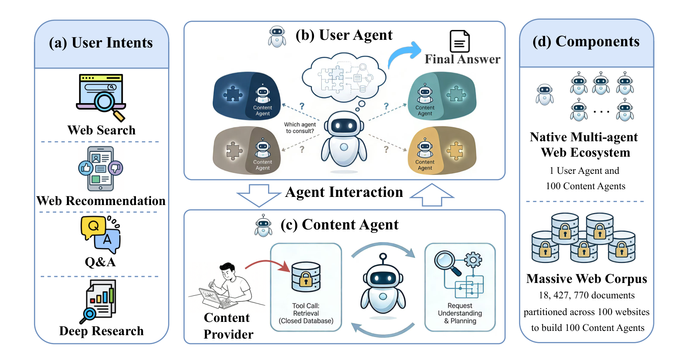

The first Agentic-Web benchmark
A comprehensive evaluation of agent performance across four common web tasks, providing a foundation for research in this emerging paradigm.
Benchmarking Multi-Agent Coordination in the Agentic Web
As content providers wrap their data behind agent-facing interfaces, web access shifts from centralized retrieval to decentralized coordination. AgentWebBench is the first comprehensive benchmark for this paradigm: a user agent must coordinate with 100 autonomous content agents to satisfy real web information needs.
1Language Technologies Institute, Carnegie Mellon University · 2Anaxi Labs
Agentic Web is an emerging paradigm where autonomous agents help users use online information. As the paradigm develops, content providers are also deploying agents to manage their data and serve it through controlled interfaces. This shift moves information access from centralized retrieval to decentralized coordination. To study this setting, we introduce AgentWebBench, a benchmark that evaluates how well a user agent synthesizes answers by interacting with website-specific content agents. We evaluate four tasks that cover common web information needs, spanning ranked retrieval (web search, web recommendation) and open-ended synthesis (question answering, deep research). Across seven advanced LLMs and three coordination strategies, multi-agent coordination generally lags behind centralized retrieval as expected, because user agent cannot directly access the corpus, but the gap shrinks with model scale and can even outperform centralized retrieval on question answering. This benchmark also enables us to study properties of the emerging paradigm of the digital world. We find that decentralized access concentrates traffic toward a small set of websites, test time scaling improves both interaction reliability and task performance, and strong results require sufficient interactions guided by careful planning. Finally, our failure analysis suggests that user agents need better planning and answer synthesis, while content agents need more reliable retrieval and evidence quality.
AgentWebBench formalizes the Agentic Web as a decentralized information ecosystem. Given a user intent, a user agent selects relevant websites, queries their content agents through agent-facing interfaces, and synthesizes the returned evidence into a final answer.

A comprehensive evaluation of agent performance across four common web tasks, providing a foundation for research in this emerging paradigm.
A user agent coordinates with many content agents. The decentralized setting generally trails the centralized baseline, but the gap narrows with scale and reverses on question answering.
We characterize ecosystem impact and improvement pathways: traffic concentration, test-time scaling, interaction efficiency, and failure analysis.
Explore the benchmark design → or jump straight to the leaderboard & analysis →
@inproceedings{zhong2026agentwebbench,
title = {AgentWebBench: Benchmarking Multi-Agent Coordination in Agentic Web},
author = {Zhong, Shanshan and Shen, Kate and Xiong, Chenyan},
booktitle = {Proceedings of the 43rd International Conference on Machine Learning (ICML)},
year = {2026},
url = {https://github.com/cxcscmu/AgentWebBench}
}